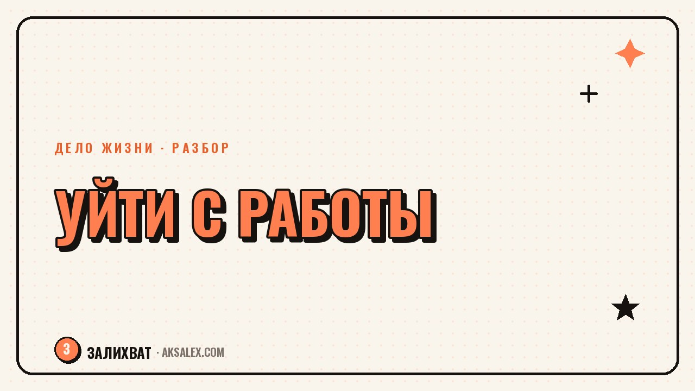

Как понять, что готов уйти с нелюбимой работы

Мысль «я больше не могу» приходит почти у каждого хотя бы раз в год - после трудного проекта, конфликта с руководителем или долгой зимы. Разница между обычной усталостью и настоящей готовностью уйти в том, что усталость проходит после отпуска, а готовность уйти - нет. Разобраться, где ты находишься, помогают не вдохновляющие лозунги, а честные вопросы к себе и несколько конкретных проверок.
Усталость или пора уходить: как отличить одно от другого
Усталость обычно привязана к конкретному периоду: сдали проект, закрыли квартал, пережили сложного клиента - и через пару недель отдыха становится легче. Если после отпуска или выходных мысль «не хочу туда возвращаться» не ослабевает, а, наоборот, нарастает в воскресенье вечером, это уже не усталость, а сигнал, что дело не в конкретной неделе.
Второй маркер - изменилось ли отношение к самой работе или только к обстоятельствам. Если тебе нравится то, что ты делаешь, но мешает начальник или токсичная команда, решение может быть - сменить место, а не профессию.
Вопросы, которые стоит задать себе
- Становится ли легче после отпуска хотя бы на неделю, или тяжесть возвращается сразу
- Что именно выматывает - сами задачи, люди вокруг или ощущение, что твой труд не видят
- Представляешь ли ты себя на этой же должности через три года без внутреннего протеста
- Отказываешься ли ты от предложений и проектов только потому, что на всё не хватает сил
Что обычно держит на месте, когда пора уже уходить
Чаще всего держит не привязанность к работе, а страх перед неизвестностью: непонятно, что делать дальше, страшно потерять стабильный доход, неудобно перед коллегами, которые останутся. Это реальные причины для осторожности, но не причины годами откладывать даже первый шаг - например, обновление резюме или разговор с рекрутером без обязательств.
Решение уйти не обязано быть драматичным прыжком в неизвестность. Чаще это несколько маленьких, проверяемых шагов, после которых становится ясно - готов ты или ещё нет.
Сигналы «остаться» и «готов уйти» по разным сферам
| Сфера | Сигнал остаться и разобраться на месте | Сигнал готовности уходить |
|---|---|---|
| Финансы | Нет подушки, кредиты требуют стабильного дохода | Есть запас на 3-6 месяцев или план его собрать |
| Эмоции | Усталость проходит после отдыха | Тяжесть возвращается уже в воскресенье вечером |
| Отношение к сути работы | Нравится дело, мешают обстоятельства | Равнодушие к самой сути задач, а не только к условиям |
| Перспективы | Видно, как вырасти или сменить роль внутри | Рост на этом месте физически невозможен |
| Здоровье | Разовые перегрузки в пиковый период | Постоянные нарушения сна, тревога по утрам перед работой |
Что проверить до того, как писать заявление
Перед уходом полезно сделать несколько проверочных шагов, которые ничего не решают окончательно, но дают больше ясности. Поговори с рекрутером на рынке своей профессии без цели срочно устроиться - только чтобы понять реальный уровень предложений. Обнови резюме и посмотри на свой опыт со стороны, будто читаешь его про незнакомого человека.
- Посчитай, на сколько месяцев хватит финансовой подушки без дохода
- Поговори с человеком, который уже сменил похожую работу - не за советом, а чтобы услышать реальный опыт
- Попробуй взять небольшой проект или фриланс-задачу в новой области, прежде чем менять всё сразу
- Выпиши, что конкретно должно измениться на новом месте, а не только от чего ты хочешь уйти
Как говорить об этом с собой и близкими
Формулировка «я ненавижу свою работу» часто пугает близких и заставляет их отговаривать из страха за тебя, а не потому что они против твоего счастья. Полезнее говорить конкретно: что не работает, что ты уже пробовал изменить и почему решил, что следующий шаг - уход.
Не обязательно принимать решение за один разговор. Нормально вернуться к вопросу через месяц с новыми данными - после разговора с рекрутером или пробного проекта - и увидеть, что ответ изменился.
Частые вопросы
Как понять, что дело не в работе, а во мне?
Обрати внимание, повторяется ли похожая усталость на разных местах работы или проявляется именно здесь. Если равнодушие и выгорание тянутся через несколько разных должностей и компаний, стоит отдельно разобраться с режимом отдыха и общим состоянием, а не менять работу за работой.
Сколько должна быть финансовая подушка перед увольнением?
Универсального числа нет, ориентируйся на свои обязательные траты за 3-6 месяцев без дохода. Если такой подушки нет, это не значит, что нужно оставаться навсегда - можно собирать её параллельно с поиском нового места, не увольняясь резко.
Стоит ли уходить без плана, что делать дальше?
Это рискованно и подходит не всем: без финансовой подстраховки резкий уход может добавить тревоги вместо облегчения. Чаще работает промежуточный шаг - начать искать варианты и говорить с людьми из профессии, оставаясь на текущем месте, пока не появится ясность.
Как не спутать выгорание с тем, что это не та профессия?
Выгорание часто снимается отпуском, сменой нагрузки или отдыхом хотя бы частично, а усталость от самой сути профессии не проходит даже после паузы. Если после двух-трёх недель полноценного отдыха тяжесть возвращается в первый же рабочий день, это сигнал смотреть глубже, чем обычная усталость.
Что если близкие не поддерживают решение уйти с работы?
Попробуй объяснить решение через конкретные факты, а не только через эмоции - что ты уже пробовал изменить и почему это не сработало. Чаще всего близкие боятся не твоего счастья, а неизвестности и финансового риска, и разговор о конкретном плане снимает часть этого страха.
Раз тема оказалась полезной, вот что почитать следующим. Разбираем, как блогеру начать вести канал в Max и не наделать ошибок при переносе контента.
Читать статью →а не вручную